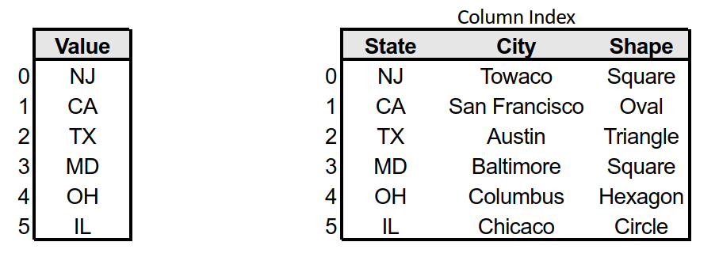

#==================================================================================
#==================================================================================
#RUN THIS PART ONLY IF YOU ARE ON GOOGLE COLAB
from google.colab import drive
drive.mount('/content/drive')
Mounted at /content/drive
import os
# Navigate to the folder in Google Drive
#copy and paste your pathway between the apostrophe below '___your_folder_pathway_____'
folder_path = '/content/drive/MyDrive/Classroom/Python_pandas'
# List files in the folder
os.listdir(folder_path)
['.gitignore', 'README.md', 'sac-visual.pdf', 'ufo.csv', '.git', '.ipynb_checkpoints', 'assets', 'datasets', 'output_test', 'solutions', 'intro-to-pandas-starter-code.ipynb', 'KNN.ipynb']
#==================================================================================
#==================================================================================
Lesson Guide¶
- What is
pandas? - Reading data
- Exploring data
- Filtering
- Sorting
- Split-Apply-Combine
- Missing Values
What is pandas?¶
- Data analysis library - Panel data system (doesn't actually have to do with the animal, sorry).
- Created by Wes McKinney and Open Sourced by AQR Capital Management, LLC 2009.
- Implemented in highly optimized Python/Cython.
- Most ubiquitous tool used to start data analysis projects within the Python scientific ecosystem.
Pandas Use Cases¶
- Cleaning data / Munging
- Exploratory Data Analysis (EDA)
- Structuring data for plots or tabular display
- Joining disparate sources
- Filtering, extracting, or transforming
Importing the Dynamic Trio¶
From here on out, we'll begin pretty much all of our notebooks with the following three imports.
- pandas: The library we'll be using to do pretty much all data manipulation.
- numpy: The library we'll need to do various other computations. Even if you don't think you'll need it to start, you'll probably end up using it later.
- matplotlib: The library we'll use most for plotting. More on this another day.
import numpy as np
import pandas as pd
import matplotlib.pyplot as plt
Loading a csv into a DataFrame¶
Pandas can load many types of files, but one of the most common filetypes for storing data is in a .csv file. Let's load a dataset on UFO sightings from the ./datasets directory:
#-----------------------------
#Load in your dataset
ufo = pd.read_csv('datasets/ufo.csv')
#RUN THIS CELL IF YOU ARE ON GOOGLE COLAB
#and go over the following instructions:
#Google Drive method after mounting
#IF YOU ARE RUNNING THIS ON GOOGLE COLAB, make sure the folder this file is in is mounted onto your drive and saved within
#your google drive. Grab the pathway location of your dataset and put
#it in between the appostrophes --> pd.read_csv('your_pathway')
ufo = pd.read_csv('/content/drive/MyDrive/Classroom/2.01-intro-to-pandas/datasets/ufo.csv')
This creates a pandas object called a DataFrame. These are powerful containers for data with many built-in functions to explore and manipulate data.
We will barely scratch the surface of DataFrame functionality in this lesson, but over the course of this class you will become an expert at using them.
Exploratory Data Analysis (EDA) with Python!¶
DataFrames come with built-in functionality that makes data exploration easy.
Let's start by looking at the "head" of your data with the .head() built-in function. If run alone in a notebook cell, it will show you the first and last handful of columns and the first 5 rows.
#-----------------------------------------
ufo.head(10) #look at the top of our dataframe
| City | Colors Reported | Shape Reported | State | Time | |
|---|---|---|---|---|---|
| 0 | Ithaca | NaN | TRIANGLE | NY | 6/1/1930 22:00 |
| 1 | Willingboro | NaN | OTHER | NJ | 6/30/1930 20:00 |
| 2 | Holyoke | NaN | OVAL | CO | 2/15/1931 14:00 |
| 3 | Abilene | NaN | DISK | KS | 6/1/1931 13:00 |
| 4 | New York Worlds Fair | NaN | LIGHT | NY | 4/18/1933 19:00 |
| 5 | Valley City | NaN | DISK | ND | 9/15/1934 15:30 |
| 6 | Crater Lake | NaN | CIRCLE | CA | 6/15/1935 0:00 |
| 7 | Alma | NaN | DISK | MI | 7/15/1936 0:00 |
| 8 | Eklutna | NaN | CIGAR | AK | 10/15/1936 17:00 |
| 9 | Hubbard | NaN | CYLINDER | OR | 6/15/1937 0:00 |
If we want to see the last part of our data, we can equivalently use the .tail() function.
#---------------------------------------
ufo.tail() #look at the bottom
| City | Colors Reported | Shape Reported | State | Time | |
|---|---|---|---|---|---|
| 80538 | Neligh | NaN | CIRCLE | NE | 9/4/2014 23:20 |
| 80539 | Uhrichsville | NaN | LIGHT | OH | 9/5/2014 1:14 |
| 80540 | Tucson | RED BLUE | NaN | AZ | 9/5/2014 2:40 |
| 80541 | Orland park | RED | LIGHT | IL | 9/5/2014 3:43 |
| 80542 | Loughman | NaN | LIGHT | FL | 9/5/2014 5:30 |
Data dimensions¶
It's good to look at what the dimensions of your data are. The .shape property will tell you the rows and colum counts of your DataFrame.
#------------------
ufo.shape
(80543, 5)
/poll "In terms of rows, is this the largest dataset you've ever worked with?" "Yes" "No" "Not sure, but I'm not impressed anyway" anonymous limit 1
You will notice that this is operates the same as .shape for numpy arrays/matricies. Pandas makes use of numpy under the hood for optimization and speed.
Look at the names of your columns with the .columns property.
#----------------
ufo.columns
Index(['City', 'Colors Reported', 'Shape Reported', 'State', 'Time'], dtype='object')
Accessing a specific column is easy. You can use the bracket syntax just like python dictionaries with the string name of the column to extract that column.
#------------------------------
#One method....
ufo['City'].head()
0 Ithaca 1 Willingboro 2 Holyoke 3 Abilene 4 New York Worlds Fair Name: City, dtype: object
#Another method...
ufo['City']
0 Ithaca
1 Willingboro
2 Holyoke
3 Abilene
4 New York Worlds Fair
...
80538 Neligh
80539 Uhrichsville
80540 Tucson
80541 Orland park
80542 Loughman
Name: City, Length: 80543, dtype: object
#Another......
ufo.City
0 Ithaca
1 Willingboro
2 Holyoke
3 Abilene
4 New York Worlds Fair
...
80538 Neligh
80539 Uhrichsville
80540 Tucson
80541 Orland park
80542 Loughman
Name: City, Length: 80543, dtype: object
As you can see we can also use the .head() function on a single column, which is represented as a pandas Series object.
You can also access a column (as a DataFrame instead of a Series) or multiple columns with a list of strings.
#-------------------
ufo[['City', 'State', 'Time']].head() #double bracket bec inner bracket representing a list
#you will get a common error type if you dont do double bracket
| City | State | Time | |
|---|---|---|---|
| 0 | Ithaca | NY | 6/1/1930 22:00 |
| 1 | Willingboro | NJ | 6/30/1930 20:00 |
| 2 | Holyoke | CO | 2/15/1931 14:00 |
| 3 | Abilene | KS | 6/1/1931 13:00 |
| 4 | New York Worlds Fair | NY | 4/18/1933 19:00 |
#------------------------------
#try slicing your data frame:
ufo[['City', 'State', 'Time']].head()
| City | State | Time | |
|---|---|---|---|
| 0 | Ithaca | NY | 6/1/1930 22:00 |
| 1 | Willingboro | NJ | 6/30/1930 20:00 |
| 2 | Holyoke | CO | 2/15/1931 14:00 |
| 3 | Abilene | KS | 6/1/1931 13:00 |
| 4 | New York Worlds Fair | NY | 4/18/1933 19:00 |
ufo.head()
| City | Colors Reported | Shape Reported | State | Time | |
|---|---|---|---|---|---|
| 0 | Ithaca | NaN | TRIANGLE | NY | 6/1/1930 22:00 |
| 1 | Willingboro | NaN | OTHER | NJ | 6/30/1930 20:00 |
| 2 | Holyoke | NaN | OVAL | CO | 2/15/1931 14:00 |
| 3 | Abilene | NaN | DISK | KS | 6/1/1931 13:00 |
| 4 | New York Worlds Fair | NaN | LIGHT | NY | 4/18/1933 19:00 |
DataFrame vs. Series¶
We've been playing with them, so I guess we should define them formally:
- A
Seriesis a one-dimensional array of values with an index. - A
DataFrameis a two-dimensional array of values with both a row and column index. - It turns out - each column of a
DataFrameis actually aSeries!

There is an important difference between using a list of strings and just a string with a column's name: when you use a list with the string it returns another DataFrame, but when you use just the string it returns a pandas Series object.
print(type(ufo['City']))
print(type(ufo[['City']]))
<class 'pandas.core.series.Series'> <class 'pandas.core.frame.DataFrame'>
Examining your data with .info()¶
The .info() should be the first thing you look at when getting acquainted with a new dataset.
Types are very important. They impact the way data will be represented in our machine learning models, how data can be joined, whether or not math operators can be applied, and when you can encounter unexpected results.
Typical problems when working with new datasets:
- Missing values
- Unexpected types (string/object instead of int/float)
- Dirty data (commas, dollar signs, unexpected characters, etc)
- Blank values that are actually "non-null" or single white-space characters
.info() is a function that is available on every DataFrame object. It gives you information about:
- Name of column / variable attribute
- Type of index (RangeIndex is default)
- Count of non-null values by column / attribute
- Type of data contained in column / attribute
- Unqiue counts of dtypes (Pandas data types)
- Memory usage of our dataset
ufo.info()
<class 'pandas.core.frame.DataFrame'> RangeIndex: 80543 entries, 0 to 80542 Data columns (total 5 columns): # Column Non-Null Count Dtype --- ------ -------------- ----- 0 City 80496 non-null object 1 Colors Reported 17034 non-null object 2 Shape Reported 72141 non-null object 3 State 80543 non-null object 4 Time 80543 non-null object dtypes: object(5) memory usage: 3.1+ MB
Aside: Working with "Big Data"¶
The term Big Data has become a little bit of a buzzword with no clear, consensus definition. The most common definition is that Big Data are data that are too big to fit in your computer's memory.

The reason that this definition is good is because when your data size exceeds your RAM, you have to use a separate set of tools to solve your problems. For example:
- Spark
- Hadoop
- Being clever with how you read and use data
- Separate it into small chunks for example.
Quick Summaries¶
The .describe() function is very useful for taking a quick look at your data. It gives you some of the basic descriptive statistics.
You can use .value_counts() to get a good tabular view of a categorical variable.
# Let's read in the diamonds data set.
diamonds = pd.read_csv("datasets/diamonds.csv")
#IF YOU ARE RUNNING THIS ON GOOGLE COLAB:
#Grab the pathway location of your dataset and put
#it in between the appostrophes --> pd.read_csv('your_pathway')
diamonds = pd.read_csv('/content/drive/MyDrive/Classroom/2.01-intro-to-pandas/datasets/diamonds.csv')
diamonds.head()
| carat | cut | color | clarity | depth | table | price | x | y | z | |
|---|---|---|---|---|---|---|---|---|---|---|
| 0 | 0.23 | Ideal | E | SI2 | 61.5 | 55.0 | 326 | 3.95 | 3.98 | 2.43 |
| 1 | 0.21 | Premium | E | SI1 | 59.8 | 61.0 | 326 | 3.89 | 3.84 | 2.31 |
| 2 | 0.23 | Good | E | VS1 | 56.9 | 65.0 | 327 | 4.05 | 4.07 | 2.31 |
| 3 | 0.29 | Premium | I | VS2 | 62.4 | 58.0 | 334 | 4.20 | 4.23 | 2.63 |
| 4 | 0.31 | Good | J | SI2 | 63.3 | 58.0 | 335 | 4.34 | 4.35 | 2.75 |
diamonds.shape
(53940, 10)
diamonds['carat'].value_counts()
0.30 2604
0.31 2249
1.01 2242
0.70 1981
0.32 1840
...
3.02 1
3.65 1
3.50 1
3.22 1
3.11 1
Name: carat, Length: 273, dtype: int64
diamonds.tail()
| carat | cut | color | clarity | depth | table | price | x | y | z | |
|---|---|---|---|---|---|---|---|---|---|---|
| 53935 | 0.72 | Ideal | D | SI1 | 60.8 | 57.0 | 2757 | 5.75 | 5.76 | 3.50 |
| 53936 | 0.72 | Good | D | SI1 | 63.1 | 55.0 | 2757 | 5.69 | 5.75 | 3.61 |
| 53937 | 0.70 | Very Good | D | SI1 | 62.8 | 60.0 | 2757 | 5.66 | 5.68 | 3.56 |
| 53938 | 0.86 | Premium | H | SI2 | 61.0 | 58.0 | 2757 | 6.15 | 6.12 | 3.74 |
| 53939 | 0.75 | Ideal | D | SI2 | 62.2 | 55.0 | 2757 | 5.83 | 5.87 | 3.64 |
# Let's describe the price
diamonds['price'].describe()
count 53940.000000 mean 3932.799722 std 3989.439738 min 326.000000 25% 950.000000 50% 2401.000000 75% 5324.250000 max 18823.000000 Name: price, dtype: float64
plt.figure(figsize=(8, 6))
plt.hist(diamonds['price'], bins=30, edgecolor='black')
plt.title('Histogram of Price')
plt.xlabel('Price')
plt.ylabel('Frequency')
plt.grid(True)
plt.show()
![No description has been provided for this image]()
#About 13k+ 'prices' of diamonds fall within the first box (or bin)
diamonds['price'].value_counts()
605 132
802 127
625 126
828 125
776 124
...
8816 1
14704 1
14699 1
14698 1
9793 1
Name: price, Length: 11602, dtype: int64
# We can even do it to the whole DataFrame - what does that look like?
# What's missing?
diamonds.describe()
| carat | depth | table | price | x | y | z | |
|---|---|---|---|---|---|---|---|
| count | 53940.000000 | 53940.000000 | 53940.000000 | 53940.000000 | 53940.000000 | 53940.000000 | 53940.000000 |
| mean | 0.797940 | 61.749405 | 57.457184 | 3932.799722 | 5.731157 | 5.734526 | 3.538734 |
| std | 0.474011 | 1.432621 | 2.234491 | 3989.439738 | 1.121761 | 1.142135 | 0.705699 |
| min | 0.200000 | 43.000000 | 43.000000 | 326.000000 | 0.000000 | 0.000000 | 0.000000 |
| 25% | 0.400000 | 61.000000 | 56.000000 | 950.000000 | 4.710000 | 4.720000 | 2.910000 |
| 50% | 0.700000 | 61.800000 | 57.000000 | 2401.000000 | 5.700000 | 5.710000 | 3.530000 |
| 75% | 1.040000 | 62.500000 | 59.000000 | 5324.250000 | 6.540000 | 6.540000 | 4.040000 |
| max | 5.010000 | 79.000000 | 95.000000 | 18823.000000 | 10.740000 | 58.900000 | 31.800000 |
diamonds[['cut', 'clarity', 'color']]. describe()
| cut | clarity | color | |
|---|---|---|---|
| count | 53940 | 53940 | 53940 |
| unique | 5 | 8 | 7 |
| top | Ideal | SI1 | G |
| freq | 21551 | 13065 | 11292 |
# Let's count up the cuts
diamonds['cut'].value_counts()
Ideal 21551 Premium 13791 Very Good 12082 Good 4906 Fair 1610 Name: cut, dtype: int64
# Let's do the same thing, but normalized
diamonds['cut'].value_counts(normalize=True)
Ideal 0.399537 Premium 0.255673 Very Good 0.223990 Good 0.090953 Fair 0.029848 Name: cut, dtype: float64
diamonds['cut']
0 Ideal
1 Premium
2 Good
3 Premium
4 Good
...
53935 Ideal
53936 Good
53937 Very Good
53938 Premium
53939 Ideal
Name: cut, Length: 53940, dtype: object
.describe() gives us these statistics:
- count, which is equivalent to the number of cells (rows)
- mean, the average of the values in the column
- std, which is the standard deviation
- min, the minimum value
- 25%, the 25th percentile of the values
- 50%, the 50th percentile of the values, which is the equivalent to the median
- 75%, the 75th percentile of the values
- max, the maximum value
There are built-in math functions that will work on all of the columns of a DataFrame at once, or subsets of the data.
I can use the .mean() function on the ufo DataFrame to get the mean for every column.
diamonds['carat'].mean()
0.7979397478679852
diamonds.mean()
carat 0.797940 depth 61.749405 table 57.457184 price 3932.799722 x 5.731157 y 5.734526 z 3.538734 dtype: float64
diamonds['price'].median()
2401.0
diamonds['price'].quantile([0.025, 0.975])
0.025 478.000 0.975 15618.525 Name: price, dtype: float64
Now you!¶
Now that we know a little bit about basic DataFrame use, let's practice on a new dataset.
Pro tip: You can use the "tab" key to browse filesystem resources when your cursor is in a string to get a relative reference to the files that can be loaded in Jupyter notebook. Remember, you have to use your arrow keys to navigate the files populated in the UI.

- Read in the
cars.csvdataset. (call itcars) - What is the mean
mpgfor cars in this dataset?
#-------------------------------
cars = pd.read_csv('datasets/cars.csv')
cars['mpg'].mean()
20.090624999999996
#IF YOU ARE RUNNING THIS ON GOOGLE COLAB:
#Grab the pathway location of your dataset and put
#it in between the appostrophes --> pd.read_csv('your_pathway')
cars = pd.read_csv('/content/drive/MyDrive/Classroom/2.01-intro-to-pandas/datasets/cars.csv')
Give me the first few rows of the data:
#--------------------
cars.head() #check your data
| mpg | cyl | disp | hp | drat | wt | qsec | vs | am | gear | carb | |
|---|---|---|---|---|---|---|---|---|---|---|---|
| 0 | 21.0 | 6 | 160.0 | 110 | 3.90 | 2.620 | 16.46 | 0 | 1 | 4 | 4 |
| 1 | 21.0 | 6 | 160.0 | 110 | 3.90 | 2.875 | 17.02 | 0 | 1 | 4 | 4 |
| 2 | 22.8 | 4 | 108.0 | 93 | 3.85 | 2.320 | 18.61 | 1 | 1 | 4 | 1 |
| 3 | 21.4 | 6 | 258.0 | 110 | 3.08 | 3.215 | 19.44 | 1 | 0 | 3 | 1 |
| 4 | 18.7 | 8 | 360.0 | 175 | 3.15 | 3.440 | 17.02 | 0 | 0 | 3 | 2 |
Give me the last few rows of the data:
#---------------------
cars.tail()
| mpg | cyl | disp | hp | drat | wt | qsec | vs | am | gear | carb | |
|---|---|---|---|---|---|---|---|---|---|---|---|
| 27 | 30.4 | 4 | 95.1 | 113 | 3.77 | 1.513 | 16.9 | 1 | 1 | 5 | 2 |
| 28 | 15.8 | 8 | 351.0 | 264 | 4.22 | 3.170 | 14.5 | 0 | 1 | 5 | 4 |
| 29 | 19.7 | 6 | 145.0 | 175 | 3.62 | 2.770 | 15.5 | 0 | 1 | 5 | 6 |
| 30 | 15.0 | 8 | 301.0 | 335 | 3.54 | 3.570 | 14.6 | 0 | 1 | 5 | 8 |
| 31 | 21.4 | 4 | 121.0 | 109 | 4.11 | 2.780 | 18.6 | 1 | 1 | 4 | 2 |
cars['mpg'].mean() # we technically just .mean but if we want a specific element
20.090624999999996
Filtering¶
We usually don't need to operate on the whole dataset. A very common task is to parse it down to only the pieces we need.
v = np.array([12, 98, 9, 50, 23])
# What do you think the result of this cell is?
v[[True, False, True, False, True]] #it will show only the true values
#return anything that is true
array([12, 9, 23])
# How about this?
v < 40
array([ True, False, True, False, True])
# So...
v[v < 40]
array([12, 9, 23])
# And this?
cars['mpg'] > 30
0 False 1 False 2 False 3 False 4 False 5 False 6 False 7 False 8 False 9 False 10 False 11 False 12 False 13 False 14 False 15 False 16 False 17 True 18 True 19 True 20 False 21 False 22 False 23 False 24 False 25 False 26 False 27 True 28 False 29 False 30 False 31 False Name: mpg, dtype: bool
# Finally...
cars[cars['cyl'] == 6 ]
| mpg | cyl | disp | hp | drat | wt | qsec | vs | am | gear | carb | |
|---|---|---|---|---|---|---|---|---|---|---|---|
| 0 | 21.0 | 6 | 160.0 | 110 | 3.90 | 2.620 | 16.46 | 0 | 1 | 4 | 4 |
| 1 | 21.0 | 6 | 160.0 | 110 | 3.90 | 2.875 | 17.02 | 0 | 1 | 4 | 4 |
| 3 | 21.4 | 6 | 258.0 | 110 | 3.08 | 3.215 | 19.44 | 1 | 0 | 3 | 1 |
| 5 | 18.1 | 6 | 225.0 | 105 | 2.76 | 3.460 | 20.22 | 1 | 0 | 3 | 1 |
| 9 | 19.2 | 6 | 167.6 | 123 | 3.92 | 3.440 | 18.30 | 1 | 0 | 4 | 4 |
| 10 | 17.8 | 6 | 167.6 | 123 | 3.92 | 3.440 | 18.90 | 1 | 0 | 4 | 4 |
| 29 | 19.7 | 6 | 145.0 | 175 | 3.62 | 2.770 | 15.50 | 0 | 1 | 5 | 6 |
cars['cyl']
0 6 1 6 2 4 3 6 4 8 5 6 6 8 7 4 8 4 9 6 10 6 11 8 12 8 13 8 14 8 15 8 16 8 17 4 18 4 19 4 20 4 21 8 22 8 23 8 24 8 25 4 26 4 27 4 28 8 29 6 30 8 31 4 Name: cyl, dtype: int64
Filtering in pandas uses vectors of booleans to describe inclusion or exclusion. True means you're in, False means you're out.
cars['mpg'] > 30 #this shows everything true and false for mpg
0 False 1 False 2 False 3 False 4 False 5 False 6 False 7 False 8 False 9 False 10 False 11 False 12 False 13 False 14 False 15 False 16 False 17 True 18 True 19 True 20 False 21 False 22 False 23 False 24 False 25 False 26 False 27 True 28 False 29 False 30 False 31 False Name: mpg, dtype: bool
# This functions identically to the code above, and can sometimes feels a little cleaner.
# Variables that serve this function are sometimes called "masks"
mask = cars['mpg'] > 30
cars[mask] #show us cars but only things over 30
# ^ we are passing in a list of boolean
| mpg | cyl | disp | hp | drat | wt | qsec | vs | am | gear | carb | |
|---|---|---|---|---|---|---|---|---|---|---|---|
| 17 | 32.4 | 4 | 78.7 | 66 | 4.08 | 2.200 | 19.47 | 1 | 1 | 4 | 1 |
| 18 | 30.4 | 4 | 75.7 | 52 | 4.93 | 1.615 | 18.52 | 1 | 1 | 4 | 2 |
| 19 | 33.9 | 4 | 71.1 | 65 | 4.22 | 1.835 | 19.90 | 1 | 1 | 4 | 1 |
| 27 | 30.4 | 4 | 95.1 | 113 | 3.77 | 1.513 | 16.90 | 1 | 1 | 5 | 2 |
Multiple Filters¶
Often we want to filter based on multiple conditions. We can use the usual "and" and "or" logic, but the symbols change for mystical (read: annoying) Python reasons.
# "And" logic - use ampersand (&)
# Note parentheses mandatory!
cars[(cars['cyl'] == 4) & (cars['am'] == 1)]
| mpg | cyl | disp | hp | drat | wt | qsec | vs | am | gear | carb | |
|---|---|---|---|---|---|---|---|---|---|---|---|
| 2 | 22.8 | 4 | 108.0 | 93 | 3.85 | 2.320 | 18.61 | 1 | 1 | 4 | 1 |
| 17 | 32.4 | 4 | 78.7 | 66 | 4.08 | 2.200 | 19.47 | 1 | 1 | 4 | 1 |
| 18 | 30.4 | 4 | 75.7 | 52 | 4.93 | 1.615 | 18.52 | 1 | 1 | 4 | 2 |
| 19 | 33.9 | 4 | 71.1 | 65 | 4.22 | 1.835 | 19.90 | 1 | 1 | 4 | 1 |
| 25 | 27.3 | 4 | 79.0 | 66 | 4.08 | 1.935 | 18.90 | 1 | 1 | 4 | 1 |
| 26 | 26.0 | 4 | 120.3 | 91 | 4.43 | 2.140 | 16.70 | 0 | 1 | 5 | 2 |
| 27 | 30.4 | 4 | 95.1 | 113 | 3.77 | 1.513 | 16.90 | 1 | 1 | 5 | 2 |
| 31 | 21.4 | 4 | 121.0 | 109 | 4.11 | 2.780 | 18.60 | 1 | 1 | 4 | 2 |
# "Or" logic - use pipe (|)
cars[(cars['cyl'] == 4) | (cars['am'] == 1)]
| mpg | cyl | disp | hp | drat | wt | qsec | vs | am | gear | carb | |
|---|---|---|---|---|---|---|---|---|---|---|---|
| 0 | 21.0 | 6 | 160.0 | 110 | 3.90 | 2.620 | 16.46 | 0 | 1 | 4 | 4 |
| 1 | 21.0 | 6 | 160.0 | 110 | 3.90 | 2.875 | 17.02 | 0 | 1 | 4 | 4 |
| 2 | 22.8 | 4 | 108.0 | 93 | 3.85 | 2.320 | 18.61 | 1 | 1 | 4 | 1 |
| 7 | 24.4 | 4 | 146.7 | 62 | 3.69 | 3.190 | 20.00 | 1 | 0 | 4 | 2 |
| 8 | 22.8 | 4 | 140.8 | 95 | 3.92 | 3.150 | 22.90 | 1 | 0 | 4 | 2 |
| 17 | 32.4 | 4 | 78.7 | 66 | 4.08 | 2.200 | 19.47 | 1 | 1 | 4 | 1 |
| 18 | 30.4 | 4 | 75.7 | 52 | 4.93 | 1.615 | 18.52 | 1 | 1 | 4 | 2 |
| 19 | 33.9 | 4 | 71.1 | 65 | 4.22 | 1.835 | 19.90 | 1 | 1 | 4 | 1 |
| 20 | 21.5 | 4 | 120.1 | 97 | 3.70 | 2.465 | 20.01 | 1 | 0 | 3 | 1 |
| 25 | 27.3 | 4 | 79.0 | 66 | 4.08 | 1.935 | 18.90 | 1 | 1 | 4 | 1 |
| 26 | 26.0 | 4 | 120.3 | 91 | 4.43 | 2.140 | 16.70 | 0 | 1 | 5 | 2 |
| 27 | 30.4 | 4 | 95.1 | 113 | 3.77 | 1.513 | 16.90 | 1 | 1 | 5 | 2 |
| 28 | 15.8 | 8 | 351.0 | 264 | 4.22 | 3.170 | 14.50 | 0 | 1 | 5 | 4 |
| 29 | 19.7 | 6 | 145.0 | 175 | 3.62 | 2.770 | 15.50 | 0 | 1 | 5 | 6 |
| 30 | 15.0 | 8 | 301.0 | 335 | 3.54 | 3.570 | 14.60 | 0 | 1 | 5 | 8 |
| 31 | 21.4 | 4 | 121.0 | 109 | 4.11 | 2.780 | 18.60 | 1 | 1 | 4 | 2 |
Now you:¶
#----------------------
# (THREAD): Show me all the UFO sightings in your hometown! (City and State)
# Anything interesting?
ufo[(ufo['City'] == 'Los Angeles') & (ufo['State'] == 'CA')].count()
City 413 Colors Reported 68 Shape Reported 376 State 413 Time 413 dtype: int64
ufo[ ( ufo['Time'] >= '6/1/1930' ) & ( ufo['Time'] <= '9/5/2014' ) ].count()
City 34049 Colors Reported 7086 Shape Reported 30796 State 34071 Time 34071 dtype: int64
Aside: Some shortcuts¶
cars[cars['mpg'].between(24, 30)]
| mpg | cyl | disp | hp | drat | wt | qsec | vs | am | gear | carb | |
|---|---|---|---|---|---|---|---|---|---|---|---|
| 7 | 24.4 | 4 | 146.7 | 62 | 3.69 | 3.190 | 20.0 | 1 | 0 | 4 | 2 |
| 25 | 27.3 | 4 | 79.0 | 66 | 4.08 | 1.935 | 18.9 | 1 | 1 | 4 | 1 |
| 26 | 26.0 | 4 | 120.3 | 91 | 4.43 | 2.140 | 16.7 | 0 | 1 | 5 | 2 |
cars[~cars['mpg'].between(14, 31)] #the tilda (~) does in the inverse
# so here dont show range between 14 and 31
| mpg | cyl | disp | hp | drat | wt | qsec | vs | am | gear | carb | |
|---|---|---|---|---|---|---|---|---|---|---|---|
| 14 | 10.4 | 8 | 472.0 | 205 | 2.93 | 5.250 | 17.98 | 0 | 0 | 3 | 4 |
| 15 | 10.4 | 8 | 460.0 | 215 | 3.00 | 5.424 | 17.82 | 0 | 0 | 3 | 4 |
| 17 | 32.4 | 4 | 78.7 | 66 | 4.08 | 2.200 | 19.47 | 1 | 1 | 4 | 1 |
| 19 | 33.9 | 4 | 71.1 | 65 | 4.22 | 1.835 | 19.90 | 1 | 1 | 4 | 1 |
| 23 | 13.3 | 8 | 350.0 | 245 | 3.73 | 3.840 | 15.41 | 0 | 0 | 3 | 4 |
ufo[ufo['City'].isin(['Towaco', 'Montville'])]
| City | Colors Reported | Shape Reported | State | Time | |
|---|---|---|---|---|---|
| 1585 | Towaco | NaN | CIRCLE | NJ | 5/20/1968 19:00 |
| 29123 | Montville | NaN | VARIOUS | OH | 6/10/2004 21:00 |
| 34461 | Montville | NaN | CONE | OH | 10/20/2005 20:00 |
| 45630 | Towaco | NaN | TRIANGLE | NJ | 8/13/2008 1:00 |
| 55349 | Montville | NaN | DISK | CT | 11/10/2010 19:40 |
| 71134 | Towaco | NaN | OVAL | NJ | 7/15/2013 22:00 |
ufo[ufo['City'].isna()].shape
(51, 5)
ufo[ufo['City'].isna()].head()
| City | Colors Reported | Shape Reported | State | Time | |
|---|---|---|---|---|---|
| 21 | NaN | NaN | NaN | LA | 8/15/1943 0:00 |
| 22 | NaN | NaN | LIGHT | LA | 8/15/1943 0:00 |
| 204 | NaN | NaN | DISK | CA | 7/15/1952 12:30 |
| 241 | NaN | BLUE | DISK | MT | 7/4/1953 14:00 |
| 613 | NaN | NaN | DISK | NV | 7/1/1960 12:00 |
###filter for wording
ufo['City'].fillna('none',inplace=True)
#filter to find stuff with certain letters
ufo[ufo['City'].str.startswith('Tow')]
| City | Colors Reported | Shape Reported | State | Time | |
|---|---|---|---|---|---|
| 783 | Towson | NaN | OVAL | MD | 5/15/1963 14:00 |
| 1585 | Towaco | NaN | CIRCLE | NJ | 5/20/1968 19:00 |
| 3118 | Townsend | NaN | CIRCLE | MA | 11/15/1975 23:00 |
| 4367 | Town of Preble | NaN | LIGHT | NY | 7/10/1980 15:00 |
| 4776 | Townsen | NaN | NaN | MT | 8/8/1982 22:00 |
| 12534 | Towanda | BLUE | TRIANGLE | PA | 11/12/1998 21:00 |
| 13606 | Townsend | NaN | NaN | DE | 6/1/1999 22:00 |
| 23742 | Townville | NaN | DISK | PA | 11/11/2002 17:25 |
| 27237 | Tower | RED GREEN | LIGHT | MI | 11/25/2003 17:35 |
| 28873 | Towson | NaN | NaN | MD | 5/15/2004 0:30 |
| 35653 | Townsend | NaN | LIGHT | TN | 3/1/2006 22:00 |
| 38249 | Townsend | NaN | FIREBALL | MA | 11/24/2006 13:30 |
| 43823 | Townsend | NaN | NaN | TN | 4/3/2008 0:00 |
| 44107 | Towson | NaN | TRIANGLE | MD | 4/23/2008 0:30 |
| 45630 | Towaco | NaN | TRIANGLE | NJ | 8/13/2008 1:00 |
| 50280 | Towanda | NaN | FIREBALL | KS | 8/29/2009 20:40 |
| 50620 | Towson | NaN | TRIANGLE | MD | 9/19/2009 19:45 |
| 51505 | Towson | NaN | SPHERE | MD | 12/12/2009 2:10 |
| 52488 | Towson | NaN | DISK | MD | 4/25/2010 12:00 |
| 59309 | Towson | NaN | EGG | MD | 9/26/2011 18:15 |
| 59833 | Towson | GREEN | LIGHT | MD | 10/23/2011 20:15 |
| 61858 | Towson | NaN | NaN | MD | 3/7/2012 18:10 |
| 66499 | Towson | NaN | CIRCLE | MD | 10/15/2012 0:15 |
| 67755 | Towson | NaN | SPHERE | MD | 12/13/2012 6:30 |
| 68603 | Townsend | NaN | FORMATION | TN | 2/11/2013 2:05 |
| 69313 | Townsend | NaN | CIGAR | MT | 4/16/2013 22:00 |
| 69521 | Towanda | RED | FIREBALL | IL | 5/1/2013 21:53 |
| 71099 | Townsend | NaN | SPHERE | TN | 7/14/2013 18:20 |
| 71134 | Towaco | NaN | OVAL | NJ | 7/15/2013 22:00 |
| 71689 | Towson | ORANGE | FIREBALL | MD | 8/9/2013 21:42 |
| 72804 | Townville | NaN | LIGHT | PA | 9/24/2013 19:30 |
| 79748 | Townsend | NaN | FIREBALL | DE | 8/3/2014 21:00 |
Pandas Indexing: .loc and .iloc¶
So far we've learned how to select both rows and columns. The savvy and skeptical student would have noticed a problem here. We have ambiguous notation! What does this do:
data[something]
We can't tell! Is something a mask or a string? One selects rows, the other selects columns. What if we wanted to filter rows and select columns at the same time?!
Pandas has two properties that you can use for indexing:
.locindexes with the labels for rows and columns axis..ilocindexes with the integer positions for rows and columns axis.
There used to be a third,
.ixwhich is now deprecated and shan't ever be used again.
.loc is Most Common¶
The syntax of .loc is pretty intuitive:
data.loc[rows, columns]
Where rows is often a filter (ie, a mask), and columns is a list of columns, or even just : to select all columns.
ufo = pd.read_csv('datasets/ufo.csv')
#IF YOU ARE RUNNING THIS ON GOOGLE COLAB:
#Grab the pathway location of your dataset and put
#it in between the appostrophes --> pd.read_csv('your_pathway')
ufo = pd.read_csv('/content/drive/MyDrive/Classroom/Python_pandas/datasets/ufo.csv')
ufo.head()
| City | Colors Reported | Shape Reported | State | Time | |
|---|---|---|---|---|---|
| 0 | Ithaca | NaN | TRIANGLE | NY | 6/1/1930 22:00 |
| 1 | Willingboro | NaN | OTHER | NJ | 6/30/1930 20:00 |
| 2 | Holyoke | NaN | OVAL | CO | 2/15/1931 14:00 |
| 3 | Abilene | NaN | DISK | KS | 6/1/1931 13:00 |
| 4 | New York Worlds Fair | NaN | LIGHT | NY | 4/18/1933 19:00 |
ufo.loc[ufo['State'] == 'TX',['City','Shape Reported'] ]
| City | Shape Reported | |
|---|---|---|
| 37 | Dallas | SPHERE |
| 43 | Alice | DISK |
| 49 | Conroe | OTHER |
| 92 | Borger | DISK |
| 114 | Post | DISK |
| ... | ... | ... |
| 80287 | Lago Vista | TRIANGLE |
| 80350 | Houston | TRIANGLE |
| 80414 | Eustace | LIGHT |
| 80476 | Fort Worth | OTHER |
| 80534 | Burleson | LIGHT |
4186 rows × 2 columns
#SAY WE DONT WANT ALL OUR DATAFFRAME JUST USE ':''
ufo.loc[:, ['City', 'State', 'Time']] #INDEXING
| City | State | Time | |
|---|---|---|---|
| 0 | Ithaca | NY | 6/1/1930 22:00 |
| 1 | Willingboro | NJ | 6/30/1930 20:00 |
| 2 | Holyoke | CO | 2/15/1931 14:00 |
| 3 | Abilene | KS | 6/1/1931 13:00 |
| 4 | New York Worlds Fair | NY | 4/18/1933 19:00 |
| ... | ... | ... | ... |
| 80538 | Neligh | NE | 9/4/2014 23:20 |
| 80539 | Uhrichsville | OH | 9/5/2014 1:14 |
| 80540 | Tucson | AZ | 9/5/2014 2:40 |
| 80541 | Orland park | IL | 9/5/2014 3:43 |
| 80542 | Loughman | FL | 9/5/2014 5:30 |
80543 rows × 3 columns
ufo.loc[ufo['State'] == 'CA', ['City', 'Shape Reported']]
| City | Shape Reported | |
|---|---|---|
| 6 | Crater Lake | CIRCLE |
| 10 | Fontana | LIGHT |
| 15 | Forest Home | CIRCLE |
| 16 | Los Angeles | NaN |
| 25 | San Diego | CIGAR |
| ... | ... | ... |
| 80405 | San Diego | LIGHT |
| 80408 | Fallbrook | FIREBALL |
| 80421 | Manteca | SPHERE |
| 80442 | El Cajon | TRIANGLE |
| 80516 | Glendale | CYLINDER |
10743 rows × 2 columns
sample_data = ufo.loc[ufo['State'] == 'CA', ['City', 'Shape Reported']]
sample_data
| City | Shape Reported | |
|---|---|---|
| 6 | Crater Lake | CIRCLE |
| 10 | Fontana | LIGHT |
| 15 | Forest Home | CIRCLE |
| 16 | Los Angeles | NaN |
| 25 | San Diego | CIGAR |
| ... | ... | ... |
| 80405 | San Diego | LIGHT |
| 80408 | Fallbrook | FIREBALL |
| 80421 | Manteca | SPHERE |
| 80442 | El Cajon | TRIANGLE |
| 80516 | Glendale | CYLINDER |
10743 rows × 2 columns
#--------------------------------------------
![actually.png]()
Acccctually.....¶
 According to The Zen of Python, explicit is better than implicit.
According to The Zen of Python, explicit is better than implicit. .loc is explicit. Most people choose to always use .loc instead of the ambiguous data[something] notation! This is a pretty good idea! When in doubt, use .loc!
.iloc is rare, but useful¶
The i stands for "integer" and will give you the actual zero-indexed numerical indices.
cars.iloc[:5, : ] #for the rows i want to see first 5 nad columns i want to see all of em
| mpg | cyl | disp | hp | drat | wt | qsec | vs | am | gear | carb | |
|---|---|---|---|---|---|---|---|---|---|---|---|
| 0 | 21.0 | 6 | 160.0 | 110 | 3.90 | 2.620 | 16.46 | 0 | 1 | 4 | 4 |
| 1 | 21.0 | 6 | 160.0 | 110 | 3.90 | 2.875 | 17.02 | 0 | 1 | 4 | 4 |
| 2 | 22.8 | 4 | 108.0 | 93 | 3.85 | 2.320 | 18.61 | 1 | 1 | 4 | 1 |
| 3 | 21.4 | 6 | 258.0 | 110 | 3.08 | 3.215 | 19.44 | 1 | 0 | 3 | 1 |
| 4 | 18.7 | 8 | 360.0 | 175 | 3.15 | 3.440 | 17.02 | 0 | 0 | 3 | 2 |
#or
cars.iloc[10:20, 1:3 ]
| cyl | disp | |
|---|---|---|
| 10 | 6 | 167.6 |
| 11 | 8 | 275.8 |
| 12 | 8 | 275.8 |
| 13 | 8 | 275.8 |
| 14 | 8 | 472.0 |
| 15 | 8 | 460.0 |
| 16 | 8 | 440.0 |
| 17 | 4 | 78.7 |
| 18 | 4 | 75.7 |
| 19 | 4 | 71.1 |
#single observation:
cars.iloc[10:11, 1:2]
| cyl | |
|---|---|
| 10 | 7 |
cars.iloc[5:12,:]
| mpg | cyl | disp | hp | drat | wt | qsec | vs | am | gear | carb | |
|---|---|---|---|---|---|---|---|---|---|---|---|
| 5 | 18.1 | 6 | 225.0 | 105 | 2.76 | 3.46 | 20.22 | 1 | 0 | 3 | 1 |
| 6 | 14.3 | 8 | 360.0 | 245 | 3.21 | 3.57 | 15.84 | 0 | 0 | 3 | 4 |
| 7 | 24.4 | 4 | 146.7 | 62 | 3.69 | 3.19 | 20.00 | 1 | 0 | 4 | 2 |
| 8 | 22.8 | 4 | 140.8 | 95 | 3.92 | 3.15 | 22.90 | 1 | 0 | 4 | 2 |
| 9 | 19.2 | 6 | 167.6 | 123 | 3.92 | 3.44 | 18.30 | 1 | 0 | 4 | 4 |
| 10 | 17.8 | 7 | 167.6 | 123 | 3.92 | 3.44 | 18.90 | 1 | 0 | 4 | 4 |
| 11 | 16.4 | 8 | 275.8 | 180 | 3.07 | 4.07 | 17.40 | 0 | 0 | 3 | 3 |
Sorting¶
# We can sort individual Series...
cars.sort_values('mpg')
| mpg | cyl | disp | hp | drat | wt | qsec | vs | am | gear | carb | |
|---|---|---|---|---|---|---|---|---|---|---|---|
| 15 | 10.4 | 8 | 460.0 | 215 | 3.00 | 5.424 | 17.82 | 0 | 0 | 3 | 4 |
| 14 | 10.4 | 8 | 472.0 | 205 | 2.93 | 5.250 | 17.98 | 0 | 0 | 3 | 4 |
| 23 | 13.3 | 8 | 350.0 | 245 | 3.73 | 3.840 | 15.41 | 0 | 0 | 3 | 4 |
| 6 | 14.3 | 8 | 360.0 | 245 | 3.21 | 3.570 | 15.84 | 0 | 0 | 3 | 4 |
| 16 | 14.7 | 8 | 440.0 | 230 | 3.23 | 5.345 | 17.42 | 0 | 0 | 3 | 4 |
| 30 | 15.0 | 8 | 301.0 | 335 | 3.54 | 3.570 | 14.60 | 0 | 1 | 5 | 8 |
| 13 | 15.2 | 8 | 275.8 | 180 | 3.07 | 3.780 | 18.00 | 0 | 0 | 3 | 3 |
| 22 | 15.2 | 8 | 304.0 | 150 | 3.15 | 3.435 | 17.30 | 0 | 0 | 3 | 2 |
| 21 | 15.5 | 8 | 318.0 | 150 | 2.76 | 3.520 | 16.87 | 0 | 0 | 3 | 2 |
| 28 | 15.8 | 8 | 351.0 | 264 | 4.22 | 3.170 | 14.50 | 0 | 1 | 5 | 4 |
| 11 | 16.4 | 8 | 275.8 | 180 | 3.07 | 4.070 | 17.40 | 0 | 0 | 3 | 3 |
| 12 | 17.3 | 8 | 275.8 | 180 | 3.07 | 3.730 | 17.60 | 0 | 0 | 3 | 3 |
| 10 | 17.8 | 7 | 167.6 | 123 | 3.92 | 3.440 | 18.90 | 1 | 0 | 4 | 4 |
| 5 | 18.1 | 6 | 225.0 | 105 | 2.76 | 3.460 | 20.22 | 1 | 0 | 3 | 1 |
| 4 | 18.7 | 8 | 360.0 | 175 | 3.15 | 3.440 | 17.02 | 0 | 0 | 3 | 2 |
| 9 | 19.2 | 6 | 167.6 | 123 | 3.92 | 3.440 | 18.30 | 1 | 0 | 4 | 4 |
| 24 | 19.2 | 8 | 400.0 | 175 | 3.08 | 3.845 | 17.05 | 0 | 0 | 3 | 2 |
| 29 | 19.7 | 6 | 145.0 | 175 | 3.62 | 2.770 | 15.50 | 0 | 1 | 5 | 6 |
| 0 | 21.0 | 6 | 160.0 | 110 | 3.90 | 2.620 | 16.46 | 0 | 1 | 4 | 4 |
| 1 | 21.0 | 6 | 160.0 | 110 | 3.90 | 2.875 | 17.02 | 0 | 1 | 4 | 4 |
| 3 | 21.4 | 6 | 258.0 | 110 | 3.08 | 3.215 | 19.44 | 1 | 0 | 3 | 1 |
| 31 | 21.4 | 4 | 121.0 | 109 | 4.11 | 2.780 | 18.60 | 1 | 1 | 4 | 2 |
| 20 | 21.5 | 4 | 120.1 | 97 | 3.70 | 2.465 | 20.01 | 1 | 0 | 3 | 1 |
| 8 | 22.8 | 4 | 140.8 | 95 | 3.92 | 3.150 | 22.90 | 1 | 0 | 4 | 2 |
| 2 | 22.8 | 4 | 108.0 | 93 | 3.85 | 2.320 | 18.61 | 1 | 1 | 4 | 1 |
| 7 | 24.4 | 4 | 146.7 | 62 | 3.69 | 3.190 | 20.00 | 1 | 0 | 4 | 2 |
| 26 | 26.0 | 4 | 120.3 | 91 | 4.43 | 2.140 | 16.70 | 0 | 1 | 5 | 2 |
| 25 | 27.3 | 4 | 79.0 | 66 | 4.08 | 1.935 | 18.90 | 1 | 1 | 4 | 1 |
| 27 | 30.4 | 4 | 95.1 | 113 | 3.77 | 1.513 | 16.90 | 1 | 1 | 5 | 2 |
| 18 | 30.4 | 4 | 75.7 | 52 | 4.93 | 1.615 | 18.52 | 1 | 1 | 4 | 2 |
| 17 | 32.4 | 4 | 78.7 | 66 | 4.08 | 2.200 | 19.47 | 1 | 1 | 4 | 1 |
| 19 | 33.9 | 4 | 71.1 | 65 | 4.22 | 1.835 | 19.90 | 1 | 1 | 4 | 1 |
# Or the entire DataFrame
cars.sort_values(['mpg', 'drat'], ascending=False)
| mpg | cyl | disp | hp | drat | wt | qsec | vs | am | gear | carb | |
|---|---|---|---|---|---|---|---|---|---|---|---|
| 19 | 33.9 | 4 | 71.1 | 65 | 4.22 | 1.835 | 19.90 | 1 | 1 | 4 | 1 |
| 17 | 32.4 | 4 | 78.7 | 66 | 4.08 | 2.200 | 19.47 | 1 | 1 | 4 | 1 |
| 18 | 30.4 | 4 | 75.7 | 52 | 4.93 | 1.615 | 18.52 | 1 | 1 | 4 | 2 |
| 27 | 30.4 | 4 | 95.1 | 113 | 3.77 | 1.513 | 16.90 | 1 | 1 | 5 | 2 |
| 25 | 27.3 | 4 | 79.0 | 66 | 4.08 | 1.935 | 18.90 | 1 | 1 | 4 | 1 |
| 26 | 26.0 | 4 | 120.3 | 91 | 4.43 | 2.140 | 16.70 | 0 | 1 | 5 | 2 |
| 7 | 24.4 | 4 | 146.7 | 62 | 3.69 | 3.190 | 20.00 | 1 | 0 | 4 | 2 |
| 8 | 22.8 | 4 | 140.8 | 95 | 3.92 | 3.150 | 22.90 | 1 | 0 | 4 | 2 |
| 2 | 22.8 | 4 | 108.0 | 93 | 3.85 | 2.320 | 18.61 | 1 | 1 | 4 | 1 |
| 20 | 21.5 | 4 | 120.1 | 97 | 3.70 | 2.465 | 20.01 | 1 | 0 | 3 | 1 |
| 31 | 21.4 | 4 | 121.0 | 109 | 4.11 | 2.780 | 18.60 | 1 | 1 | 4 | 2 |
| 3 | 21.4 | 6 | 258.0 | 110 | 3.08 | 3.215 | 19.44 | 1 | 0 | 3 | 1 |
| 0 | 21.0 | 6 | 160.0 | 110 | 3.90 | 2.620 | 16.46 | 0 | 1 | 4 | 4 |
| 1 | 21.0 | 6 | 160.0 | 110 | 3.90 | 2.875 | 17.02 | 0 | 1 | 4 | 4 |
| 29 | 19.7 | 6 | 145.0 | 175 | 3.62 | 2.770 | 15.50 | 0 | 1 | 5 | 6 |
| 9 | 19.2 | 6 | 167.6 | 123 | 3.92 | 3.440 | 18.30 | 1 | 0 | 4 | 4 |
| 24 | 19.2 | 8 | 400.0 | 175 | 3.08 | 3.845 | 17.05 | 0 | 0 | 3 | 2 |
| 4 | 18.7 | 8 | 360.0 | 175 | 3.15 | 3.440 | 17.02 | 0 | 0 | 3 | 2 |
| 5 | 18.1 | 6 | 225.0 | 105 | 2.76 | 3.460 | 20.22 | 1 | 0 | 3 | 1 |
| 10 | 17.8 | 7 | 167.6 | 123 | 3.92 | 3.440 | 18.90 | 1 | 0 | 4 | 4 |
| 12 | 17.3 | 8 | 275.8 | 180 | 3.07 | 3.730 | 17.60 | 0 | 0 | 3 | 3 |
| 11 | 16.4 | 8 | 275.8 | 180 | 3.07 | 4.070 | 17.40 | 0 | 0 | 3 | 3 |
| 28 | 15.8 | 8 | 351.0 | 264 | 4.22 | 3.170 | 14.50 | 0 | 1 | 5 | 4 |
| 21 | 15.5 | 8 | 318.0 | 150 | 2.76 | 3.520 | 16.87 | 0 | 0 | 3 | 2 |
| 22 | 15.2 | 8 | 304.0 | 150 | 3.15 | 3.435 | 17.30 | 0 | 0 | 3 | 2 |
| 13 | 15.2 | 8 | 275.8 | 180 | 3.07 | 3.780 | 18.00 | 0 | 0 | 3 | 3 |
| 30 | 15.0 | 8 | 301.0 | 335 | 3.54 | 3.570 | 14.60 | 0 | 1 | 5 | 8 |
| 16 | 14.7 | 8 | 440.0 | 230 | 3.23 | 5.345 | 17.42 | 0 | 0 | 3 | 4 |
| 6 | 14.3 | 8 | 360.0 | 245 | 3.21 | 3.570 | 15.84 | 0 | 0 | 3 | 4 |
| 23 | 13.3 | 8 | 350.0 | 245 | 3.73 | 3.840 | 15.41 | 0 | 0 | 3 | 4 |
| 15 | 10.4 | 8 | 460.0 | 215 | 3.00 | 5.424 | 17.82 | 0 | 0 | 3 | 4 |
| 14 | 10.4 | 8 | 472.0 | 205 | 2.93 | 5.250 | 17.98 | 0 | 0 | 3 | 4 |
Now You:¶
ufo.Time = pd.to_datetime(ufo.Time)
#-----------------------------------
# Give me the 5 most recent UFO sightings in Roswell, New Mexico.
# You'll need to filter and use .sort_values()
# This is a hard one!
ufo[ (ufo['State'] == 'NM') & (ufo['City'] == 'Roswell') ].sort_values('Time', ascending=False).head()
| City | Colors Reported | Shape Reported | State | Time | |
|---|---|---|---|---|---|
| 80459 | Roswell | ORANGE | CIRCLE | NM | 2014-09-01 20:00:00 |
| 80056 | Roswell | NaN | OTHER | NM | 2014-08-18 15:00:00 |
| 67040 | Roswell | NaN | FLASH | NM | 2012-11-08 22:30:00 |
| 58960 | Roswell | NaN | LIGHT | NM | 2011-09-04 19:50:00 |
| 55978 | Roswell | NaN | EGG | NM | 2011-01-16 14:30:00 |
#ex:
roswell = ufo[ (ufo["City"] == 'Roswell') & ( ufo['State'] == 'NM' ) ] #mask
roswell.sort_values(by='Time', ascending=False)[:5]
| City | Colors Reported | Shape Reported | State | Time | |
|---|---|---|---|---|---|
| 80459 | Roswell | ORANGE | CIRCLE | NM | 2014-09-01 20:00:00 |
| 80056 | Roswell | NaN | OTHER | NM | 2014-08-18 15:00:00 |
| 67040 | Roswell | NaN | FLASH | NM | 2012-11-08 22:30:00 |
| 58960 | Roswell | NaN | LIGHT | NM | 2011-09-04 19:50:00 |
| 55978 | Roswell | NaN | EGG | NM | 2011-01-16 14:30:00 |
#ex
ufo[(ufo["City"] == 'Roswell') & ( ufo['State'] == 'NM')].sort_values('Time', ascending=False).head()
| City | Colors Reported | Shape Reported | State | Time | |
|---|---|---|---|---|---|
| 80459 | Roswell | ORANGE | CIRCLE | NM | 2014-09-01 20:00:00 |
| 80056 | Roswell | NaN | OTHER | NM | 2014-08-18 15:00:00 |
| 67040 | Roswell | NaN | FLASH | NM | 2012-11-08 22:30:00 |
| 58960 | Roswell | NaN | LIGHT | NM | 2011-09-04 19:50:00 |
| 55978 | Roswell | NaN | EGG | NM | 2011-01-16 14:30:00 |
#ex:
ufo.loc[ (ufo['City'] == 'Roswell' ) & ( ufo['State'] == 'NM' ) , : ].sort_values('Time').tail()
| City | Colors Reported | Shape Reported | State | Time | |
|---|---|---|---|---|---|
| 55978 | Roswell | NaN | EGG | NM | 2011-01-16 14:30:00 |
| 58960 | Roswell | NaN | LIGHT | NM | 2011-09-04 19:50:00 |
| 67040 | Roswell | NaN | FLASH | NM | 2012-11-08 22:30:00 |
| 80056 | Roswell | NaN | OTHER | NM | 2014-08-18 15:00:00 |
| 80459 | Roswell | ORANGE | CIRCLE | NM | 2014-09-01 20:00:00 |
Split-Apply-Combine¶
What if we want summary statistics with respect to some categorical variable? For example, the price of a diamond probably varies widely between different diamond cuts. To tackle this problem, we'll use the Split-Apply-Combine technique. (This is sometimes called MapReduce, but is more of a special case of MapReduce).
- Split: Separate your data into different DataFrames, one for each category.
- Apply: On each split-up DataFrame, apply some function or transformation (for example, the mean).
- Combine: Take the results and combine the split-up DataFrames back into one aggregate DataFrame.
This might sound complicated, but it's actually only two commands in pandas (the Combine step is done for us).
# What is the mean price by diamond cut?
diamonds.groupby(by='cut')['price'].mean()
cut Fair 4358.757764 Good 3928.864452 Ideal 3457.541970 Premium 4584.257704 Very Good 3981.759891 Name: price, dtype: float64
# Can we just describe each price by cut?
diamonds.groupby('cut')['price'].describe()
| count | mean | std | min | 25% | 50% | 75% | max | |
|---|---|---|---|---|---|---|---|---|
| cut | ||||||||
| Fair | 1610.0 | 4358.757764 | 3560.386612 | 337.0 | 2050.25 | 3282.0 | 5205.50 | 18574.0 |
| Good | 4906.0 | 3928.864452 | 3681.589584 | 327.0 | 1145.00 | 3050.5 | 5028.00 | 18788.0 |
| Ideal | 21551.0 | 3457.541970 | 3808.401172 | 326.0 | 878.00 | 1810.0 | 4678.50 | 18806.0 |
| Premium | 13791.0 | 4584.257704 | 4349.204961 | 326.0 | 1046.00 | 3185.0 | 6296.00 | 18823.0 |
| Very Good | 12082.0 | 3981.759891 | 3935.862161 | 336.0 | 912.00 | 2648.0 | 5372.75 | 18818.0 |
diamonds.groupby('cut')['price'].describe().T
#.T does some pivoting by 45degrees == TRANSPOSE
| cut | Fair | Good | Ideal | Premium | Very Good |
|---|---|---|---|---|---|
| count | 1610.000000 | 4906.000000 | 21551.000000 | 13791.000000 | 12082.000000 |
| mean | 4358.757764 | 3928.864452 | 3457.541970 | 4584.257704 | 3981.759891 |
| std | 3560.386612 | 3681.589584 | 3808.401172 | 4349.204961 | 3935.862161 |
| min | 337.000000 | 327.000000 | 326.000000 | 326.000000 | 336.000000 |
| 25% | 2050.250000 | 1145.000000 | 878.000000 | 1046.000000 | 912.000000 |
| 50% | 3282.000000 | 3050.500000 | 1810.000000 | 3185.000000 | 2648.000000 |
| 75% | 5205.500000 | 5028.000000 | 4678.500000 | 6296.000000 | 5372.750000 |
| max | 18574.000000 | 18788.000000 | 18806.000000 | 18823.000000 | 18818.000000 |
diamonds.groupby('cut')['price'].agg(['count','mean', 'median'])
| count | mean | median | |
|---|---|---|---|
| cut | |||
| Fair | 1610 | 4358.757764 | 3282.0 |
| Good | 4906 | 3928.864452 | 3050.5 |
| Ideal | 21551 | 3457.541970 | 1810.0 |
| Premium | 13791 | 4584.257704 | 3185.0 |
| Very Good | 12082 | 3981.759891 | 2648.0 |
Now You:¶
What is the mean miles per gallon for each cylinder size?
#----------------------------
cars.groupby('cyl').mean()['mpg']
cyl 4 26.663636 6 19.742857 8 15.100000 Name: mpg, dtype: float64
cars.groupby('cyl')['mpg'].mean()
cyl 4 26.663636 6 19.742857 8 15.100000 Name: mpg, dtype: float64
cars.groupby('cyl')['mpg'].median()
cyl 4 26.0 6 19.7 8 15.2 Name: mpg, dtype: float64
cars.groupby('cyl').mean()
| mpg | disp | hp | drat | wt | qsec | vs | am | gear | carb | |
|---|---|---|---|---|---|---|---|---|---|---|
| cyl | ||||||||||
| 4 | 26.663636 | 105.136364 | 82.636364 | 4.070909 | 2.285727 | 19.137273 | 0.909091 | 0.727273 | 4.090909 | 1.545455 |
| 6 | 20.066667 | 185.933333 | 122.166667 | 3.530000 | 3.063333 | 17.823333 | 0.500000 | 0.500000 | 3.833333 | 3.333333 |
| 7 | 17.800000 | 167.600000 | 123.000000 | 3.920000 | 3.440000 | 18.900000 | 1.000000 | 0.000000 | 4.000000 | 4.000000 |
| 8 | 15.100000 | 353.100000 | 209.214286 | 3.229286 | 3.999214 | 16.772143 | 0.000000 | 0.142857 | 3.285714 | 3.500000 |
First snippet cars.groupby('cyl').mean()['mpg']:
This code groups the DataFrame cars by the column 'cyl', calculates the mean of all numeric columns for each group, and then selects the 'mpg' column to show the mean values of miles per gallon (mpg) for each group. Essentially, it computes the mean of all columns first and then extracts the 'mpg' column from the result.
Second snippet cars.groupby('cyl')['mpg'].mean():
This code groups the DataFrame cars by the column 'cyl' and directly selects the 'mpg' column. It then calculates the mean of the 'mpg' values for each group. This is a more direct approach, as it only calculates the mean for the 'mpg' column without calculating the mean for other numeric columns.
Key Difference:
- First snippet: Computes the mean for all numeric columns first and then selects 'mpg'.
- Second snippet: Directly computes the mean for the 'mpg' column without calculating the mean for other columns.
Both snippets ultimately provide the same result for 'mpg', but the first one does more work by calculating the mean for other numeric columns, even if you're only interested in 'mpg'. The second approach is more efficient if you only need the mean of one column.
# What if I want my own home-spun aggregate function?
# Maybe the mean of the log-price is interesting to you?
def log_mean(p):
return np.mean(np.log(p))
diamonds.groupby('cut')['price'].agg(['count', 'mean', log_mean])
| count | mean | log_mean | |
|---|---|---|---|
| cut | |||
| Fair | 1610 | 4358.757764 | 8.093441 |
| Good | 4906 | 3928.864452 | 7.842809 |
| Ideal | 21551 | 3457.541970 | 7.639467 |
| Premium | 13791 | 4584.257704 | 7.950795 |
| Very Good | 12082 | 3981.759891 | 7.798664 |
# What if I want functions of different columns?
diamonds.groupby('cut').agg({
'price': {'count': 'count', 'price_mean': 'mean'},
'carat': {'carat_mean': 'mean'}
})
--------------------------------------------------------------------------- SpecificationError Traceback (most recent call last) Cell In[28], line 2 1 # What if I want functions of different columns? ----> 2 diamonds.groupby('cut').agg({ 3 'price': {'count': 'count', 'price_mean': 'mean'}, 4 'carat': {'carat_mean': 'mean'} 5 }) File ~\anaconda3\lib\site-packages\pandas\core\groupby\generic.py:979, in DataFrameGroupBy.aggregate(self, func, engine, engine_kwargs, *args, **kwargs) 976 func = maybe_mangle_lambdas(func) 978 op = GroupByApply(self, func, args, kwargs) --> 979 result = op.agg() 980 if not is_dict_like(func) and result is not None: 981 return result File ~\anaconda3\lib\site-packages\pandas\core\apply.py:161, in Apply.agg(self) 158 return self.apply_str() 160 if is_dict_like(arg): --> 161 return self.agg_dict_like() 162 elif is_list_like(arg): 163 # we require a list, but not a 'str' 164 return self.agg_list_like() File ~\anaconda3\lib\site-packages\pandas\core\apply.py:427, in Apply.agg_dict_like(self) 424 selected_obj = obj._selected_obj 425 selection = obj._selection --> 427 arg = self.normalize_dictlike_arg("agg", selected_obj, arg) 429 if selected_obj.ndim == 1: 430 # key only used for output 431 colg = obj._gotitem(selection, ndim=1) File ~\anaconda3\lib\site-packages\pandas\core\apply.py:539, in Apply.normalize_dictlike_arg(self, how, obj, func) 532 # Can't use func.values(); wouldn't work for a Series 533 if ( 534 how == "agg" 535 and isinstance(obj, ABCSeries) 536 and any(is_list_like(v) for _, v in func.items()) 537 ) or (any(is_dict_like(v) for _, v in func.items())): 538 # GH 15931 - deprecation of renaming keys --> 539 raise SpecificationError("nested renamer is not supported") 541 if obj.ndim != 1: 542 # Check for missing columns on a frame 543 cols = set(func.keys()) - set(obj.columns) SpecificationError: nested renamer is not supported
Adding, Dropping, Renaming, and inplace Methods¶
# Adding a column is easy, just define it!
# What if I wanted km per gal instead of miles per gal?
cars['kmpg'] = cars['mpg'] * 1.61
cars.head()
| mpg | cyl | disp | hp | drat | wt | qsec | vs | am | gear | carb | kmpg | |
|---|---|---|---|---|---|---|---|---|---|---|---|---|
| 0 | 21.0 | 6 | 160.0 | 110 | 3.90 | 2.620 | 16.46 | 0 | 1 | 4 | 4 | 33.810 |
| 1 | 21.0 | 6 | 160.0 | 110 | 3.90 | 2.875 | 17.02 | 0 | 1 | 4 | 4 | 33.810 |
| 2 | 22.8 | 4 | 108.0 | 93 | 3.85 | 2.320 | 18.61 | 1 | 1 | 4 | 1 | 36.708 |
| 3 | 21.4 | 6 | 258.0 | 110 | 3.08 | 3.215 | 19.44 | 1 | 0 | 3 | 1 | 34.454 |
| 4 | 18.7 | 8 | 360.0 | 175 | 3.15 | 3.440 | 17.02 | 0 | 0 | 3 | 2 | 30.107 |
# Oops - that actually doesn't make sense since they'd be using liters anyway.
# Let's drop it.
cars.drop('kmpg', axis=1).head()
| mpg | cyl | disp | hp | drat | wt | qsec | vs | am | gear | carb | |
|---|---|---|---|---|---|---|---|---|---|---|---|
| 0 | 21.0 | 6 | 160.0 | 110 | 3.90 | 2.620 | 16.46 | 0 | 1 | 4 | 4 |
| 1 | 21.0 | 6 | 160.0 | 110 | 3.90 | 2.875 | 17.02 | 0 | 1 | 4 | 4 |
| 2 | 22.8 | 4 | 108.0 | 93 | 3.85 | 2.320 | 18.61 | 1 | 1 | 4 | 1 |
| 3 | 21.4 | 6 | 258.0 | 110 | 3.08 | 3.215 | 19.44 | 1 | 0 | 3 | 1 |
| 4 | 18.7 | 8 | 360.0 | 175 | 3.15 | 3.440 | 17.02 | 0 | 0 | 3 | 2 |
# But... it's not gone?
cars.head() #we didnt actually delete the kmpg column.. didnt access memory
| mpg | cyl | disp | hp | drat | wt | qsec | vs | am | gear | carb | kmpg | |
|---|---|---|---|---|---|---|---|---|---|---|---|---|
| 0 | 21.0 | 6 | 160.0 | 110 | 3.90 | 2.620 | 16.46 | 0 | 1 | 4 | 4 | 33.810 |
| 1 | 21.0 | 6 | 160.0 | 110 | 3.90 | 2.875 | 17.02 | 0 | 1 | 4 | 4 | 33.810 |
| 2 | 22.8 | 4 | 108.0 | 93 | 3.85 | 2.320 | 18.61 | 1 | 1 | 4 | 1 | 36.708 |
| 3 | 21.4 | 6 | 258.0 | 110 | 3.08 | 3.215 | 19.44 | 1 | 0 | 3 | 1 | 34.454 |
| 4 | 18.7 | 8 | 360.0 | 175 | 3.15 | 3.440 | 17.02 | 0 | 0 | 3 | 2 | 30.107 |
cars.drop('kmpg', axis=1, inplace=True)
cars.head()
| mpg | cyl | disp | hp | drat | wt | qsec | vs | am | gear | carb | |
|---|---|---|---|---|---|---|---|---|---|---|---|
| 0 | 21.0 | 6 | 160.0 | 110 | 3.90 | 2.620 | 16.46 | 0 | 1 | 4 | 4 |
| 1 | 21.0 | 6 | 160.0 | 110 | 3.90 | 2.875 | 17.02 | 0 | 1 | 4 | 4 |
| 2 | 22.8 | 4 | 108.0 | 93 | 3.85 | 2.320 | 18.61 | 1 | 1 | 4 | 1 |
| 3 | 21.4 | 6 | 258.0 | 110 | 3.08 | 3.215 | 19.44 | 1 | 0 | 3 | 1 |
| 4 | 18.7 | 8 | 360.0 | 175 | 3.15 | 3.440 | 17.02 | 0 | 0 | 3 | 2 |
# Yuck - I hate spaces and capital letters
ufo.head()
| City | Colors Reported | Shape Reported | State | Time | |
|---|---|---|---|---|---|
| 0 | Ithaca | NaN | TRIANGLE | NY | 6/1/1930 22:00 |
| 1 | Willingboro | NaN | OTHER | NJ | 6/30/1930 20:00 |
| 2 | Holyoke | NaN | OVAL | CO | 2/15/1931 14:00 |
| 3 | Abilene | NaN | DISK | KS | 6/1/1931 13:00 |
| 4 | New York Worlds Fair | NaN | LIGHT | NY | 4/18/1933 19:00 |
# Lowercaseifying is easy:
# The "columns" attribute of a DataFrame works just like a numpy array or Series.
ufo.columns = ufo.columns.str.lower()
ufo.columns
Index(['city', 'colors reported', 'shape reported', 'state', 'time'], dtype='object')
ufo.head()
| City | Colors Reported | Shape Reported | State | Time | |
|---|---|---|---|---|---|
| 0 | Ithaca | NaN | TRIANGLE | NY | 6/1/1930 22:00 |
| 1 | Willingboro | NaN | OTHER | NJ | 6/30/1930 20:00 |
| 2 | Holyoke | NaN | OVAL | CO | 2/15/1931 14:00 |
| 3 | Abilene | NaN | DISK | KS | 6/1/1931 13:00 |
| 4 | New York Worlds Fair | NaN | LIGHT | NY | 4/18/1933 19:00 |
# The .rename method
ufo.rename(columns = {
'colors reported' : 'colors',
'shape reported' : 'shape'
}, inplace=True)
#inplace means 'Save my work'
#specify columns and the change the columns name you want to do..once you see the correct output set the 'inplace=True'
Aside: str and dt methods¶
There are a lot of familiar string and date operations we can perform on columns. Strangely, they exist within a pandas submodule and so have to be prefixed with str and dt respectively.
ufo['shape'].str.lower().head()
0 triangle 1 other 2 oval 3 disk 4 light Name: shape, dtype: object
ufo['shape'].str.replace('O', 'BRO').head()
0 TRIANGLE 1 BROTHER 2 BROVAL 3 DISK 4 LIGHT Name: shape, dtype: object
# We already did this above, but datetime variables need to be converted specially.
# ufo['time'] = pd.to_datetime(ufo['time'])
ufo['time'].dt.year.head()
Missing Values¶
s = pd.Series([5, 7, np.nan, 2, 10])
s
0 5.0 1 7.0 2 NaN 3 2.0 4 10.0 dtype: float64
# Hmm...
s == np.nan
0 False 1 False 2 False 3 False 4 False dtype: bool
s.isnull()
0 False 1 False 2 True 3 False 4 False dtype: bool
s.notnull()
0 True 1 True 2 False 3 True 4 True dtype: bool
s.isnull().sum()
1
ufo.isnull().sum() #sum ftn will gives a count of the missing data
city 0 colors 63509 shape reported 8402 state 0 time 0 dtype: int64
ufo.isnull().head()
| City | Colors Reported | Shape Reported | State | Time | |
|---|---|---|---|---|---|
| 0 | False | True | False | False | False |
| 1 | False | True | False | False | False |
| 2 | False | True | False | False | False |
| 3 | False | True | False | False | False |
| 4 | False | True | False | False | False |
#on the oppposite end
ufo.notnull().sum()
city 80543 colors 17034 shape reported 72141 state 80543 time 80543 dtype: int64
ufo.isna().sum()
city 0 colors 63509 shape reported 8402 state 0 time 0 dtype: int64
ufo.isna().mean()
city 0.000000 colors 0.788510 shape reported 0.104317 state 0.000000 time 0.000000 dtype: float64
# Easy way to filter out missings!
ufo.loc[ufo['colors'].notnull(),:].head()
| city | colors | shape reported | state | time | |
|---|---|---|---|---|---|
| 12 | Belton | RED | SPHERE | SC | 1939-06-30 20:00:00 |
| 19 | Bering Sea | RED | OTHER | AK | 1943-04-30 23:00:00 |
| 36 | Portsmouth | RED | FORMATION | VA | 1945-07-10 01:30:00 |
| 44 | Blairsden | GREEN | SPHERE | CA | 1946-06-30 19:00:00 |
| 66 | Wexford | BLUE | NaN | PA | 1947-07-01 20:00:00 |
Exporting Data¶
We can read data, but how do we save it so we can send it out? pandas has several methods of the form .to_*().
ufo.to_csv('ufo.csv')
Review¶
- What would we do with a dataset when we first acquire it?
- What's important to consider when first looking at a dataset?
- What are some common problems we can run into with new data?
- What are some common operations with DataFrames?
- How do we slice? Index? Filter?
EXTRA MATERIALS¶
Everything that follows is considered advanced or "too much" for our first session with pandas, and may not be explicitly covered by the instructor. If the instructor does cover it, please don't worry that you don't understand this on your first pass.
THAT DOES NOT MEAN THESE TOPICS ARE UNIMPORTANT OR RARELY USED! We highly highly recommend you take a look at these on your own time.
Merging¶
movies = pd.read_csv(
'datasets/movies.tbl',
sep='|',
encoding='latin1',
header=None,
names=['movie_id', 'title'],
usecols=[0, 1]
)
movies.head()
| movie_id | title | |
|---|---|---|
| 0 | 1 | Toy Story (1995) |
| 1 | 2 | GoldenEye (1995) |
| 2 | 3 | Four Rooms (1995) |
| 3 | 4 | Get Shorty (1995) |
| 4 | 5 | Copycat (1995) |
print('Hello')
Hello
ratings = pd.read_csv(
'datasets/movie_ratings.tsv',
sep='\t', # \t represents a tab
header=None,
names=['user_id', 'movie_id', 'rating', 'timestampzz'] #naming the headers from lef tto right ordered this way
)
ratings.head()
| user_id | movie_id | rating | timestampzz | |
|---|---|---|---|---|
| 0 | 196 | 242 | 3 | 881250949 |
| 1 | 186 | 302 | 3 | 891717742 |
| 2 | 22 | 377 | 1 | 878887116 |
| 3 | 244 | 51 | 2 | 880606923 |
| 4 | 166 | 346 | 1 | 886397596 |
movie_reviews = pd.merge(ratings, movies, how='left')
movie_reviews.head()
| user_id | movie_id | rating | timestampzz | title | |
|---|---|---|---|---|---|
| 0 | 196 | 242 | 3 | 881250949 | Kolya (1996) |
| 1 | 186 | 302 | 3 | 891717742 | L.A. Confidential (1997) |
| 2 | 22 | 377 | 1 | 878887116 | Heavyweights (1994) |
| 3 | 244 | 51 | 2 | 880606923 | Legends of the Fall (1994) |
| 4 | 166 | 346 | 1 | 886397596 | Jackie Brown (1997) |
print(movies.shape)
print(ratings.shape)
print(movie_reviews.shape)
(1682, 2) (100000, 4) (100000, 5)
movie_reviews1 = pd.merge(ratings, movies, how='inner')
movie_reviews.head()
| user_id | movie_id | rating | timestampzz | title | |
|---|---|---|---|---|---|
| 0 | 196 | 242 | 3 | 881250949 | Kolya (1996) |
| 1 | 186 | 302 | 3 | 891717742 | L.A. Confidential (1997) |
| 2 | 22 | 377 | 1 | 878887116 | Heavyweights (1994) |
| 3 | 244 | 51 | 2 | 880606923 | Legends of the Fall (1994) |
| 4 | 166 | 346 | 1 | 886397596 | Jackie Brown (1997) |
"Categorical" Variables¶
Despite the name, when pandas says "Categorical", they really mean "Ordinal" - that is, ordered categories.
For example, check out the following crosstab:
diamonds = pd.read_csv('datasets/diamonds.csv')
diamonds.head()
| carat | cut | color | clarity | depth | table | price | x | y | z | |
|---|---|---|---|---|---|---|---|---|---|---|
| 0 | 0.23 | Ideal | E | SI2 | 61.5 | 55.0 | 326 | 3.95 | 3.98 | 2.43 |
| 1 | 0.21 | Premium | E | SI1 | 59.8 | 61.0 | 326 | 3.89 | 3.84 | 2.31 |
| 2 | 0.23 | Good | E | VS1 | 56.9 | 65.0 | 327 | 4.05 | 4.07 | 2.31 |
| 3 | 0.29 | Premium | I | VS2 | 62.4 | 58.0 | 334 | 4.20 | 4.23 | 2.63 |
| 4 | 0.31 | Good | J | SI2 | 63.3 | 58.0 | 335 | 4.34 | 4.35 | 2.75 |
pd.crosstab(diamonds['cut'], diamonds['color'])
| color | D | E | F | G | H | I | J |
|---|---|---|---|---|---|---|---|
| cut | |||||||
| Fair | 163 | 224 | 312 | 314 | 303 | 175 | 119 |
| Good | 662 | 933 | 909 | 871 | 702 | 522 | 307 |
| Ideal | 2834 | 3903 | 3826 | 4884 | 3115 | 2093 | 896 |
| Premium | 1603 | 2337 | 2331 | 2924 | 2360 | 1428 | 808 |
| Very Good | 1513 | 2400 | 2164 | 2299 | 1824 | 1204 | 678 |
The "cuts" are not in the right order! They're actually in alphabetical order. We can fix this by telling pandas that there really is an important ordering here.
diamonds['cut'] = pd.Categorical(diamonds['cut'], categories=['Fair', 'Good', 'Very Good', 'Premium', 'Ideal'])
pd.crosstab(diamonds['cut'], diamonds['color'])
| color | D | E | F | G | H | I | J |
|---|---|---|---|---|---|---|---|
| cut | |||||||
| Fair | 163 | 224 | 312 | 314 | 303 | 175 | 119 |
| Good | 662 | 933 | 909 | 871 | 702 | 522 | 307 |
| Very Good | 1513 | 2400 | 2164 | 2299 | 1824 | 1204 | 678 |
| Premium | 1603 | 2337 | 2331 | 2924 | 2360 | 1428 | 808 |
| Ideal | 2834 | 3903 | 3826 | 4884 | 3115 | 2093 | 896 |
Categorizing with .map()¶
cars = pd.read_csv('datasets/cars.csv')
cars.head()
| mpg | cyl | disp | hp | drat | wt | qsec | vs | am | gear | carb | |
|---|---|---|---|---|---|---|---|---|---|---|---|
| 0 | 21.0 | 6 | 160.0 | 110 | 3.90 | 2.620 | 16.46 | 0 | 1 | 4 | 4 |
| 1 | 21.0 | 6 | 160.0 | 110 | 3.90 | 2.875 | 17.02 | 0 | 1 | 4 | 4 |
| 2 | 22.8 | 4 | 108.0 | 93 | 3.85 | 2.320 | 18.61 | 1 | 1 | 4 | 1 |
| 3 | 21.4 | 6 | 258.0 | 110 | 3.08 | 3.215 | 19.44 | 1 | 0 | 3 | 1 |
| 4 | 18.7 | 8 | 360.0 | 175 | 3.15 | 3.440 | 17.02 | 0 | 0 | 3 | 2 |
cars.tail()
| mpg | cyl | disp | hp | drat | wt | qsec | vs | am | gear | carb | |
|---|---|---|---|---|---|---|---|---|---|---|---|
| 27 | 30.4 | 4 | 95.1 | 113 | 3.77 | 1.513 | 16.9 | 1 | 1 | 5 | 2 |
| 28 | 15.8 | 8 | 351.0 | 264 | 4.22 | 3.170 | 14.5 | 0 | 1 | 5 | 4 |
| 29 | 19.7 | 6 | 145.0 | 175 | 3.62 | 2.770 | 15.5 | 0 | 1 | 5 | 6 |
| 30 | 15.0 | 8 | 301.0 | 335 | 3.54 | 3.570 | 14.6 | 0 | 1 | 5 | 8 |
| 31 | 21.4 | 4 | 121.0 | 109 | 4.11 | 2.780 | 18.6 | 1 | 1 | 4 | 2 |
cars['cyl_word'] = cars['cyl'].map({4: 'Four', 6: 'Six', 8: 'Eight'})
cars['cyl_word'].value_counts()
Eight 14 Four 11 Six 7 Name: cyl_word, dtype: int64
def is_efficient(x):
if x > 20:
return "Efficient"
else:
return "Wasteful"
cars['fuel_economy'] = cars['mpg'].map(is_efficient)
cars['fuel_economy'].value_counts()
Wasteful 18 Efficient 14 Name: fuel_economy, dtype: int64
cars.head()
| mpg | cyl | disp | hp | drat | wt | qsec | vs | am | gear | carb | fuel_economy | |
|---|---|---|---|---|---|---|---|---|---|---|---|---|
| 0 | 21.0 | 6 | 160.0 | 110 | 3.90 | 2.620 | 16.46 | 0 | 1 | 4 | 4 | Efficient |
| 1 | 21.0 | 6 | 160.0 | 110 | 3.90 | 2.875 | 17.02 | 0 | 1 | 4 | 4 | Efficient |
| 2 | 22.8 | 4 | 108.0 | 93 | 3.85 | 2.320 | 18.61 | 1 | 1 | 4 | 1 | Efficient |
| 3 | 21.4 | 6 | 258.0 | 110 | 3.08 | 3.215 | 19.44 | 1 | 0 | 3 | 1 | Efficient |
| 4 | 18.7 | 8 | 360.0 | 175 | 3.15 | 3.440 | 17.02 | 0 | 0 | 3 | 2 | Wasteful |
Advanced Data Manipulation with .apply()¶
The .apply() method is very similar to .map(), except more advanced. You can apply a function along any axis of a DataFrame. .apply() is our "Swiss army knife" for data manipulation - if something can't be solved with ordinary means, it might be time for a .apply().
sizes = pd.Series([8, 4, 5, 'L', 2, 12, 16, 8, 'XL'])
sizes
0 8 1 4 2 5 3 L 4 2 5 12 6 16 7 8 8 XL dtype: object
def to_num(x):
try:
out = float(x)
except:
out = np.nan
return out
sizes.apply(to_num)
0 8.0 1 4.0 2 5.0 3 NaN 4 2.0 5 12.0 6 16.0 7 8.0 8 NaN dtype: float64
cars.head()
| mpg | cyl | disp | hp | drat | wt | qsec | vs | am | gear | carb | fuel_economy | |
|---|---|---|---|---|---|---|---|---|---|---|---|---|
| 0 | 21.0 | 6 | 160.0 | 110 | 3.90 | 2.620 | 16.46 | 0 | 1 | 4 | 4 | Efficient |
| 1 | 21.0 | 6 | 160.0 | 110 | 3.90 | 2.875 | 17.02 | 0 | 1 | 4 | 4 | Efficient |
| 2 | 22.8 | 4 | 108.0 | 93 | 3.85 | 2.320 | 18.61 | 1 | 1 | 4 | 1 | Efficient |
| 3 | 21.4 | 6 | 258.0 | 110 | 3.08 | 3.215 | 19.44 | 1 | 0 | 3 | 1 | Efficient |
| 4 | 18.7 | 8 | 360.0 | 175 | 3.15 | 3.440 | 17.02 | 0 | 0 | 3 | 2 | Wasteful |
def describe_car(row):
efficiency = row['fuel_economy'].lower()
#cyl = row['cyl'].lower() #editing row ['cyl_word'] to cyl
auto = 'automatic' if row['am'] == 1 else 'manual'
print(f"This cyl cylinder car has {auto} transmission and a(n) {efficiency} fuel economy.")
cars.head().apply(describe_car, axis=1)
This cyl cylinder car has automatic transmission and a(n) efficient fuel economy. This cyl cylinder car has automatic transmission and a(n) efficient fuel economy. This cyl cylinder car has automatic transmission and a(n) efficient fuel economy. This cyl cylinder car has manual transmission and a(n) efficient fuel economy. This cyl cylinder car has manual transmission and a(n) wasteful fuel economy.
0 None 1 None 2 None 3 None 4 None dtype: object
BONUS QUESTION: Why are there 5 "None" valus in the above output?